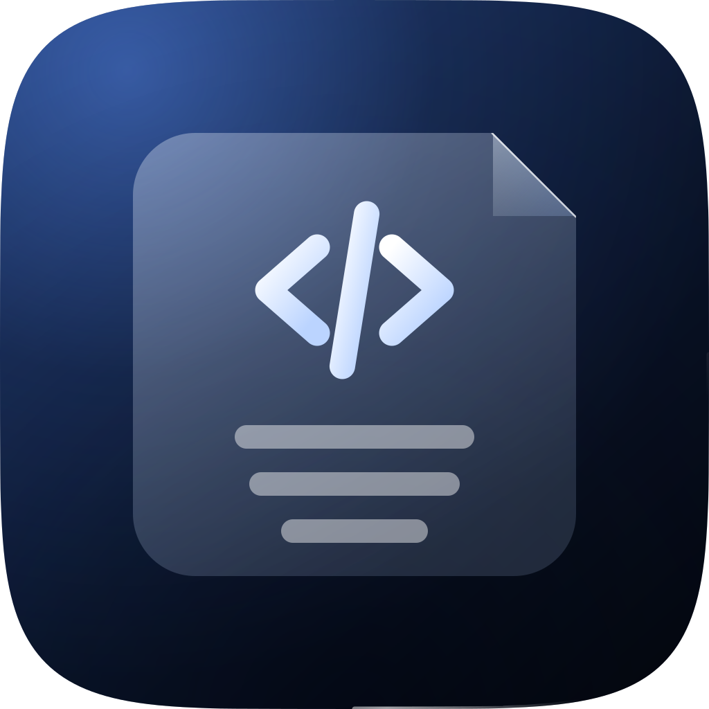

主题色 = 应用图标的背景色
品牌色只定义一处（--color-brand），主按钮 / 勾选 / 焦点环 / 选中态字色都指向它；下面用图标 tokens 验收，并守着对比度与「语义色不被品牌化」。
浅色外观 · 对齐图标浅色变体
图标背景
--color-brand
链接色（variant=link）
▤ 选中的笔记（选中底 + 选中字）
▤ 悬停档（selection-strong）
焦点环：
深色外观 · 对齐图标深色变体

图标高光
--color-brand
链接色（variant=link）
▤ 选中的笔记（选中底 + 选中字）
▤ 悬停档（selection-strong）
焦点环：
running…